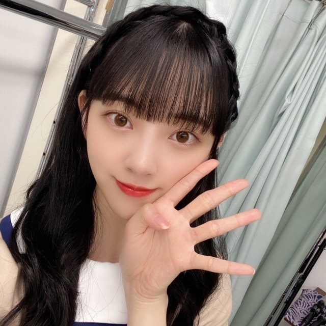

2020/1015Thu24

今日10月15日で
24歳になりました〜！
たくさんのお祝いをしてくださり
本当に本当にありがとうございます。
この24年間いろんなことがあって、
いまこうして楽しくやりがいを感じながら
毎日を過ごせていることを幸せに思います。
周りの方々に恵まれているし
夢や目標を叶えられる、追える環境にもいれて
そしてだいすきな乃木坂46で
1メンバーとして過ごせていて
よかったなって思うことばかりです。


今年はどんな年になるかな...
たくさんのことに挑戦して開拓して
自分探しの旅のような一年にしたいと思います。
そして周りの人を、幸せにできるような
強くて優しい人でありたいと思います。
こんな私ですが24歳の堀未央奈も
堀未央奈らしくがんばりますので
応援よろしくお願いします...>_<...
大好きです♡
あ、今日は家族がご馳走作って
待っててくれるんだ〜
楽しみすぎます うふへふひひひひ
わたし、赤だしの味噌汁が大好きなので
赤だしの味噌汁は必須にしてもらいました。笑
またインスタ載せますね
2020.10.15
2020/10/15 20:42
コメント(669)
誕生日おめでとう！！！
未央奈～ こんにちは
ブログ更新ありがとうございます。
そして「２４歳のお誕生日、おめでとうございます。」
子年(ねずみどし)の年女としての充実した毎日、何よりのことと思います。
「周りの人を幸せにできるような強くて優しい人でありたい」と願うそんな未央奈が大好きです。このところ、３・４期生からも頼りになる優しい未央奈の姿の報告が届いています。今、気づきましたが、これって、まいまいが卒業にあたって、未央奈に託したことじゃないですか。そうか、ちゃんと引き継いでくれているんですね。
れなちの「推しの１コマ」の前にCBCラジオで流れていた「バレッタ」、「生まれてきてくれてありがとう」の一言に全く共感です。赤だしとともに、急に近さも感じました。「サンエト」５周年、これからも「一番近い星」でいてくださいね。応援しております。
午前０時に投稿したので、このコメントは２３時５９分に出し、一日を締めくくりたいと思います。
改めて、「２４歳のお誕生日、おめでとうございます。」
ブログ更新ありがとうございます。
そして「２４歳のお誕生日、おめでとうございます。」
子年(ねずみどし)の年女としての充実した毎日、何よりのことと思います。
「周りの人を幸せにできるような強くて優しい人でありたい」と願うそんな未央奈が大好きです。このところ、３・４期生からも頼りになる優しい未央奈の姿の報告が届いています。今、気づきましたが、これって、まいまいが卒業にあたって、未央奈に託したことじゃないですか。そうか、ちゃんと引き継いでくれているんですね。
れなちの「推しの１コマ」の前にCBCラジオで流れていた「バレッタ」、「生まれてきてくれてありがとう」の一言に全く共感です。赤だしとともに、急に近さも感じました。「サンエト」５周年、これからも「一番近い星」でいてくださいね。応援しております。
午前０時に投稿したので、このコメントは２３時５９分に出し、一日を締めくくりたいと思います。
改めて、「２４歳のお誕生日、おめでとうございます。」
堀ちゃんこんばんは！
ブログの更新ありがとうございます( ´ ▽ ` )♩
改めて今日はお誕生日おめでとうございます！(o^^o)
今日1日は誕生日として、きっと堀ちゃんなら素晴らしい1日になったのではないでしょうか(^^)
そして明日からは1年間、24歳の堀ちゃんとしてさらに素晴らしい1年にしていきましょう！
僕も全力で後押しします！( ´ ▽ ` )
こうして節目の日にブログを更新してくれて、決意やファンへの言葉など、誠実に表してくれる堀ちゃんは本当に魅力的な人です(*´ー｀*)
いつも僕たちのことを大切に想ってくれてありがとう(o^^o)
堀ちゃんのファンでいると、凄く僕たちは大切にされてるなぁと思うんです( ´ ▽ ` )
テレビなどで見られる部分だけじゃない、ブログやSNSなど、どんな場でも大事に熱量を注いで活動している堀ちゃんのこと、心から尊敬します(o^^o)
堀ちゃんのことを好きな部分は数え切れませんし、好きな熱量も計り知れません( ´ ▽ ` )
どれぐらい伝わってるかなぁ、これからも長ーくたくさん伝えていきますね(^^)笑
24歳の堀ちゃんも、いくつになっても大好きです(o^^o)
赤だし！僕も大好きです！インスタ楽しみです！笑
また色んなものを色んなところで見せてくれるのを楽しみにしていますね( ´ ▽ ` )♩
それでは、明日からもまたどうぞよろしくお願いします(o^^o)♩
堀ちゃんが幸せでありますように( ´ ▽ ` )
2020.10.15
ブログの更新ありがとうございます( ´ ▽ ` )♩
改めて今日はお誕生日おめでとうございます！(o^^o)
今日1日は誕生日として、きっと堀ちゃんなら素晴らしい1日になったのではないでしょうか(^^)
そして明日からは1年間、24歳の堀ちゃんとしてさらに素晴らしい1年にしていきましょう！
僕も全力で後押しします！( ´ ▽ ` )
こうして節目の日にブログを更新してくれて、決意やファンへの言葉など、誠実に表してくれる堀ちゃんは本当に魅力的な人です(*´ー｀*)
いつも僕たちのことを大切に想ってくれてありがとう(o^^o)
堀ちゃんのファンでいると、凄く僕たちは大切にされてるなぁと思うんです( ´ ▽ ` )
テレビなどで見られる部分だけじゃない、ブログやSNSなど、どんな場でも大事に熱量を注いで活動している堀ちゃんのこと、心から尊敬します(o^^o)
堀ちゃんのことを好きな部分は数え切れませんし、好きな熱量も計り知れません( ´ ▽ ` )
どれぐらい伝わってるかなぁ、これからも長ーくたくさん伝えていきますね(^^)笑
24歳の堀ちゃんも、いくつになっても大好きです(o^^o)
赤だし！僕も大好きです！インスタ楽しみです！笑
また色んなものを色んなところで見せてくれるのを楽しみにしていますね( ´ ▽ ` )♩
それでは、明日からもまたどうぞよろしくお願いします(o^^o)♩
堀ちゃんが幸せでありますように( ´ ▽ ` )
2020.10.15
お誕生日おめでとうございます！
これからも応援してます！
これからも応援してます！
ほりっぴ～、ナンチです♪
24th Happy birthday
素敵な年女の一年を過ごしてね
連ドラへの出演を期待しちゃいます
これからもずっと推しは変わらんよ～
24th Happy birthday
素敵な年女の一年を過ごしてね
連ドラへの出演を期待しちゃいます
これからもずっと推しは変わらんよ～
未央奈今日も可愛い！！！
未央奈！
誕生日おめでとう！こうやって文字やSNSなどを媒介してじゃないとお祝いの言葉送れないけど！祝ってます！笑笑
証拠に今日ケーキ買ってきました！
ケーキはショートケーキとティラミス!!
晩御飯には餃子を食べました！
未央奈が幸せな日には自分も幸せでいようと思います！！
これ打ってたら0:00になってしまった…
それでは ✨
未央奈！
誕生日おめでとう！こうやって文字やSNSなどを媒介してじゃないとお祝いの言葉送れないけど！祝ってます！笑笑
証拠に今日ケーキ買ってきました！
ケーキはショートケーキとティラミス!!
晩御飯には餃子を食べました！
未央奈が幸せな日には自分も幸せでいようと思います！！
これ打ってたら0:00になってしまった…
それでは ✨
おめでとう〜良い年になりますように
未央奈ちゃん！！
24歳のお誕生日おめでとうございます
自粛期間中もほぼ毎日のようにブログを更新してくれて私たちファンを楽しませてくれたり、インスタでメイクのこと美容のことファッションのことなどを発信してくれたり、未央奈ちゃんから発せられる言葉にやる気や勇気をもらったり背中を押されたり、未央奈ちゃんは本当に私の女性としての人としての憧れです。23歳の一年は未央奈ちゃんのことをよりいっそう大好きになった年でした。中身だけじゃなく未央奈ちゃんのThe女の子みたいなキュートなお顔も大好きです。
こんなに好きなだけじゃなく尊敬までさせてくれてありがとう。
24歳も素敵な一年になりますように未央奈ちゃんのことがこれからもずっと大好きです
24歳のお誕生日おめでとうございます
自粛期間中もほぼ毎日のようにブログを更新してくれて私たちファンを楽しませてくれたり、インスタでメイクのこと美容のことファッションのことなどを発信してくれたり、未央奈ちゃんから発せられる言葉にやる気や勇気をもらったり背中を押されたり、未央奈ちゃんは本当に私の女性としての人としての憧れです。23歳の一年は未央奈ちゃんのことをよりいっそう大好きになった年でした。中身だけじゃなく未央奈ちゃんのThe女の子みたいなキュートなお顔も大好きです。
こんなに好きなだけじゃなく尊敬までさせてくれてありがとう。
24歳も素敵な一年になりますように
未央奈ちゃん、日付変わっちゃた。
１日遅れでなんとも締まらないけど
お誕生日おめでとう
乃木どこから、見ている僕としては感慨深いです。
本当に、本当に、本当に可愛い
これからも全力で応援します❗️
未央奈ちゃん大好き❤️
１日遅れでなんとも締まらないけど
お誕生日おめでとう
乃木どこから、見ている僕としては感慨深いです。
本当に、本当に、本当に可愛い
これからも全力で応援します❗️
未央奈ちゃん大好き❤️
おめでとう♡
未央奈誕生日おめでとう！
バレッタの時から大好きです！
密かにもー1回のセンター待ってます！
大好きです！
バレッタの時から大好きです！
密かにもー1回のセンター待ってます！
大好きです！
みおなさん24歳おめでとうーー
今年は、コロナでみんな大変ですが
早くライブで盛り上がりたいですね
みおなさんにとって素敵な1年に
なりますよう祈っています
今年は、コロナでみんな大変ですが
早くライブで盛り上がりたいですね
みおなさんにとって素敵な1年に
なりますよう祈っています
ちょい遅い 誕生日おめでとう♪
赤だし味噌汁はクセになる味ですよね（個人の感想です）
24歳 堀ちゃんらしくいきましょ☆
赤だし味噌汁はクセになる味ですよね（個人の感想です）
24歳 堀ちゃんらしくいきましょ☆
未央奈ちゃんお誕生日おめでとうございます
みおな お誕生日おめでとう。
いつも みおならしく
げんきに過ごしてくれていることを
いつも願っています！！
今日はいっぱい食べて ゆっくり寝てね。
いつも みおならしく
げんきに過ごしてくれていることを
いつも願っています！！
今日はいっぱい食べて ゆっくり寝てね。
こんばんは。m(_ _)m
何度か『うし』の名前でコメントさせていただいていましたが、この度、『君のその足元を照らしたい、うし。』に名前を変えることにしました。
今後ともよろしくお願いいたします。
では、本題に入りますね。
まず、遅刻して日付が変わってしまい申し訳ありません。
orz
いや、今日は仕事が忙しくってですね、昼飯もギリギリ食べれたくらいでしてね、やっと解放されて……24歳の誕生日おめでとうございますorz
乃木坂の妹さん達からもお祝いのメッセージ届いたでしょうか？
25歳までの一年間の旅の中で、堀さんがどんな自分を見付けるか楽しみにしていますね。
では、また何かあったらコメントさせて
いただきますね。m(_ _)m
最後にもう一度、遅刻してすみませんでしたorz
何度か『うし』の名前でコメントさせていただいていましたが、この度、『君のその足元を照らしたい、うし。』に名前を変えることにしました。
今後ともよろしくお願いいたします。
では、本題に入りますね。
まず、遅刻して日付が変わってしまい申し訳ありません。
orz
いや、今日は仕事が忙しくってですね、昼飯もギリギリ食べれたくらいでしてね、やっと解放されて……24歳の誕生日おめでとうございますorz
乃木坂の妹さん達からもお祝いのメッセージ届いたでしょうか？
25歳までの一年間の旅の中で、堀さんがどんな自分を見付けるか楽しみにしていますね。
では、また何かあったらコメントさせて
いただきますね。m(_ _)m
最後にもう一度、遅刻してすみませんでしたorz
Happybirthday!
I'm looking forward to seeing you!
I'm looking forward to seeing you!
脇の体操ワン・ツースリー 脇の体操ワン・ツースリーからの~山ちゃん からの~里ちゃん あ、堀ちゃんこんばんわ 24歳の誕生日おめでとう！寒くなってきましたがいかがお過ごしですか？堀ちゃんにとって最＆高の24歳になりますように！
「24MIONA HORI」♪ (#^ー°)v
祝☆２４歳☆
善き一年になりますように♪
素敵なお写真たちですねっ！
いんすたは、、インスタやられている人しか
みられない？！
善き一年になりますように♪
素敵なお写真たちですねっ！
いんすたは、、インスタやられている人しか
みられない？！
ハッピーパースディ ディアみおな。
優しい人は大抵弱いです。
優しくて強い人。理想ですね。
素敵な一年になりますように。
優しい人は大抵弱いです。
優しくて強い人。理想ですね。
素敵な一年になりますように。
お誕生日おめでとうございます。
24歳かあ。どうかいつまでも乃木坂にいて下さい。
未央奈が大好きです！
24歳かあ。どうかいつまでも乃木坂にいて下さい。
未央奈が大好きです！
お誕生日おめでとうございました！！
今日(昨日)はもう更新ないと思ってたら普通に更新されてましたね。
油断してました。ごめんなさい。
堀さんと同じネズミ年であることに親近感を持ち
ファンになっておよそ1年半経ちますが
これからも応援し続けますので体調に気を付けて頑張ってくださいね。
今日(昨日)はもう更新ないと思ってたら普通に更新されてましたね。
油断してました。ごめんなさい。
堀さんと同じネズミ年であることに親近感を持ち
ファンになっておよそ1年半経ちますが
これからも応援し続けますので体調に気を付けて頑張ってくださいね。
みおな
誕生日おめでとう
さあー、今年、２４歳はじめの、年


 グッドラック
グッドラック
誕生日おめでとう
さあー、今年、２４歳はじめの、年
堀ちゃんお誕生日おめでとう♪堀ちゃんはいつも優しいじゃんかぁ～♪とくに後輩にね♪これからも後輩には優しくね～♪赤だしはタバスコも大好きでよく飲んでるよ♪お誕生日は好きな物沢山食べていいんだよ～♪いっぱい食べる堀ちゃんが大好きだよ～♪久しぶりにバレッタでも聴こうかな～♪素敵な１年になりますように♪きっとなるよ～♪
未央奈〜！！
ブログ更新ありがとう
24歳おめでとう
早いね！
未央奈にとって素敵な一年になりますように！
ずっと応援してるね！
インスタも毎日楽しみで見てるよ！
明日のMステ楽しみ
次の更新も待ってるね〜！！
ブログ更新ありがとう
24歳おめでとう
早いね！
未央奈にとって素敵な一年になりますように！
ずっと応援してるね！
インスタも毎日楽しみで見てるよ！
明日のMステ楽しみ
次の更新も待ってるね〜！！
24歳おめでとうございます。これからも素晴らしい先輩でいてください。
髪、伸びた？
お誕生日おめでとうございます！( ˙꒳˙ )
良い1年になりますように〜
良い1年になりますように〜
未央奈ちゃんこんばんは☺️
お誕生日おめでとう
HAPPY BIRTHDAY(⌒‐⌒)
新たな１年も応援していくね！
ご馳走嬉しいね(〃^ー^〃)
明日も未央奈ちゃんにHAPPYを
お休みなさい(^-^ゞ
お誕生日おめでとう
HAPPY BIRTHDAY(⌒‐⌒)
新たな１年も応援していくね！
ご馳走嬉しいね(〃^ー^〃)
明日も未央奈ちゃんにHAPPYを
お休みなさい(^-^ゞ
未央奈ちゃん、24歳のお誕生日おめでとうございます。
かつてローリング・ストーンズのミック・ジャガーがこんなことを語っていたそうです。
「若い時にしか出来ないことはたくさんあるが、ある程度歳をとらなきゃ出来ないこともたくさんある」と。
最近の未央奈ちゃんが、後輩ちゃんたちの力になろうとか、愛情を注ごうとしていることが、いろいろなところからもれ伝わってくることで、今の未央奈ちゃんがどんどん人として大きくなっているのだろうなと感じますし、ミック・ジャガーが言うような、今の歳だから出来るようになったことや、或いは今の歳になって見えるようになったことも多いのではないでしょうか。
そういうことが未央奈ちゃんの新たな魅力になっていくのでしょうね。どんどん女性っぽさや大人っぽさが目に見えて伝わってくるのが、その証明だと思います。
24歳の未央奈ちゃんがどんな女性になっていくのか、本当に楽しみです。
お誕生日おめでとうございます、
かつてローリング・ストーンズのミック・ジャガーがこんなことを語っていたそうです。
「若い時にしか出来ないことはたくさんあるが、ある程度歳をとらなきゃ出来ないこともたくさんある」と。
最近の未央奈ちゃんが、後輩ちゃんたちの力になろうとか、愛情を注ごうとしていることが、いろいろなところからもれ伝わってくることで、今の未央奈ちゃんがどんどん人として大きくなっているのだろうなと感じますし、ミック・ジャガーが言うような、今の歳だから出来るようになったことや、或いは今の歳になって見えるようになったことも多いのではないでしょうか。
そういうことが未央奈ちゃんの新たな魅力になっていくのでしょうね。どんどん女性っぽさや大人っぽさが目に見えて伝わってくるのが、その証明だと思います。
24歳の未央奈ちゃんがどんな女性になっていくのか、本当に楽しみです。
お誕生日おめでとうございます、
ずっと大好きです。
貴女に出逢えて良かったです。
貴女に出逢えて良かったです。
ブログ更新ありがとう!!
24歳おめでとう
生まれてきてくれてありがとう
素敵な一年になりますように
24歳の堀ちゃんを応援してるよ〜
24歳おめでとう
生まれてきてくれてありがとう
素敵な一年になりますように
24歳の堀ちゃんを応援してるよ〜
みおちゃん誕生日おめでとう
堀ちゃん誕生日おめでとうございます(*^^)
どんどんステキなレディになりますね
応援しています
どんどんステキなレディになりますね
応援しています
お誕生日おめでとうございます♡
未央奈ちゃんは私の憧れです。
これからもずっと応援していきます！！
未央奈ちゃんは私の憧れです。
これからもずっと応援していきます！！
ほんとにおめでとう！！！
ずっと未央奈が大好きです！！
これからも応援してるね！
ずっと未央奈が大好きです！！
これからも応援してるね！
日付変わっちゃってゴメンm(_ _)m
お誕生日おめでとう！
やりたいことやって、思いっきり楽しんでね！
家族で楽しい時間を過ごせたかな(^o^)
これからも応援しているね(^o^)/
お誕生日おめでとう！
やりたいことやって、思いっきり楽しんでね！
家族で楽しい時間を過ごせたかな(^o^)
これからも応援しているね(^o^)/
誕生日おめでとうございます！！！！！
いつも元気もらってます！
これからも様々な活動頑張ってください！
応援してます！！！！！
みおなの表題曲センターをまた見たい！！！！！！！！！！
いつも元気もらってます！
これからも様々な活動頑張ってください！
応援してます！！！！！
みおなの表題曲センターをまた見たい！！！！！！！！！！
お誕生日おめでとう！
未央奈らしく、それが一番最強だね！
本気出したらアイドル性もバラエティ性も破壊力あるもん！
素敵な１年にしてください。
未央奈らしく、それが一番最強だね！
本気出したらアイドル性もバラエティ性も破壊力あるもん！
素敵な１年にしてください。
お誕生日おめでとう
ブログ更新ありがとうございます
お誕生日おめでとうございます‼︎24歳ということで年女ですね。普段から様々な発信をして下さって、ファンの1人として嬉しい限りです。これからも益々のご活躍を応援しています。
赤だしの味噌汁いいですね。自分も大好きです。ご家族がご馳走を作って待っていてくれるということで、読んでいてとても心が温まりました。
お誕生日おめでとうございます‼︎24歳ということで年女ですね。普段から様々な発信をして下さって、ファンの1人として嬉しい限りです。これからも益々のご活躍を応援しています。
赤だしの味噌汁いいですね。自分も大好きです。ご家族がご馳走を作って待っていてくれるということで、読んでいてとても心が温まりました。
みおな
こんばんは
少し遅くなりましたが誕生日おめでとう！
24歳も楽しい1年にして下さい
生誕Tシャツも届きました
着ます
俺はみおなが推しメンでよかったって思ってるので、ブログでも書いてるから大丈夫だと思うけど、みおならしくこれからもよろしくお願いします！
最近は忙しいのか、更新が少ないですが、体には気をつけて頑張って下さい
ちなみにまいやんの卒コン配信は見るから、楽しみにしてます
28日が忙しくなったとしても、早めに切り上げるようにします
怒られて早く帰っていいなら28日は怒られて帰る方を選びます笑
這ってでも観てやりますので、リハとか頑張って下さい！
改めておめでとう！
ありがとうございました
こんばんは
少し遅くなりましたが誕生日おめでとう！
24歳も楽しい1年にして下さい
生誕Tシャツも届きました
着ます
俺はみおなが推しメンでよかったって思ってるので、ブログでも書いてるから大丈夫だと思うけど、みおならしくこれからもよろしくお願いします！
最近は忙しいのか、更新が少ないですが、体には気をつけて頑張って下さい
ちなみにまいやんの卒コン配信は見るから、楽しみにしてます
28日が忙しくなったとしても、早めに切り上げるようにします
怒られて早く帰っていいなら28日は怒られて帰る方を選びます笑
這ってでも観てやりますので、リハとか頑張って下さい！
改めておめでとう！
ありがとうございました
誕生日おめでとう
お誕生日おめでとう㊗️
24歳もステキな1年でありますように。
何か目標とかあるんかな？
健康で頑張って
じゃ、また！
24歳もステキな1年でありますように。
何か目標とかあるんかな？
健康で頑張って
じゃ、また！
お誕生日おめでとうございます。
24歳に見えない。笑 かわいさ全開ですね～。
さらにさらに ご活躍ください。＼(^o^)／
24歳に見えない。笑 かわいさ全開ですね～。
さらにさらに ご活躍ください。＼(^o^)／
未央奈様こんばんは♪
お誕生日おめでとうございます(≧∇≦)
この1年が未央奈様や未央奈様に関わる全ての方々にとって最高のものになる様に心からお祈りしております（人´∀`*）
お身体にはくれぐれも気をつけてください☆
ギア全開の未央奈様を応援してます(-´∀`-)
お誕生日おめでとうございます(≧∇≦)
この1年が未央奈様や未央奈様に関わる全ての方々にとって最高のものになる様に心からお祈りしております（人´∀`*）
お身体にはくれぐれも気をつけてください☆
ギア全開の未央奈様を応援してます(-´∀`-)
ブログ更新ありがとう
そして誕生日おめでとう
もう24歳だね、あっという間な気がします。最近まで20歳くらいな気がしてました。
ここ1年半くらいでずっと大人っぽくなったと感じます。
素敵です。
インスタと2nd写真集のTwitter動画見たよ
今日はエクステでロングだったね
やっぱロングもいいね、可愛いです。
また髪を伸ばすのも期待してるね。
堀ちゃんが素敵な24歳を過ごせますよう応援します。
では〜
そして誕生日おめでとう
もう24歳だね、あっという間な気がします。最近まで20歳くらいな気がしてました。
ここ1年半くらいでずっと大人っぽくなったと感じます。
素敵です。
インスタと2nd写真集のTwitter動画見たよ
今日はエクステでロングだったね
やっぱロングもいいね、可愛いです。
また髪を伸ばすのも期待してるね。
堀ちゃんが素敵な24歳を過ごせますよう応援します。
では〜
堀ちゃん、こんばんは！
誕生日おめでとうございます！
乃木中の言ってそうグランプリ、演技最高でした！
これからもどんどんギアを上げてください！
誕生日おめでとうございます！
乃木中の言ってそうグランプリ、演技最高でした！
これからもどんどんギアを上げてください！


これからも頑張ってください！
応援してます！